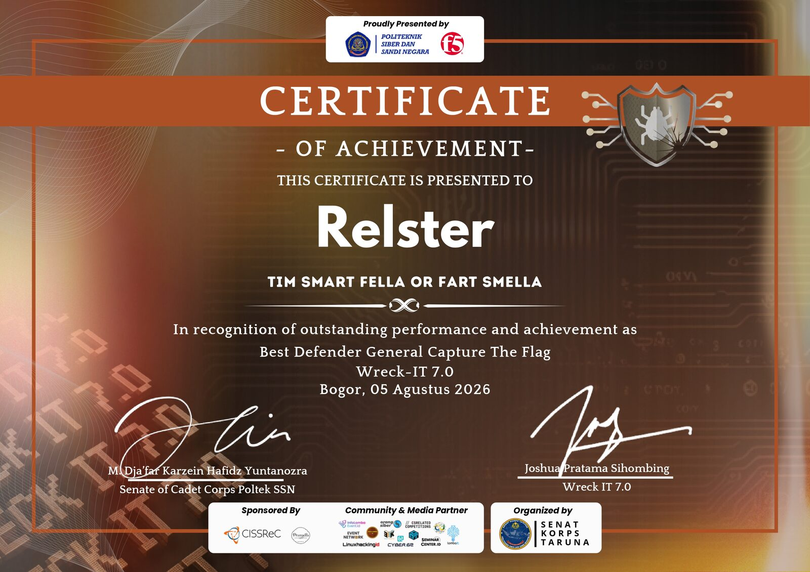
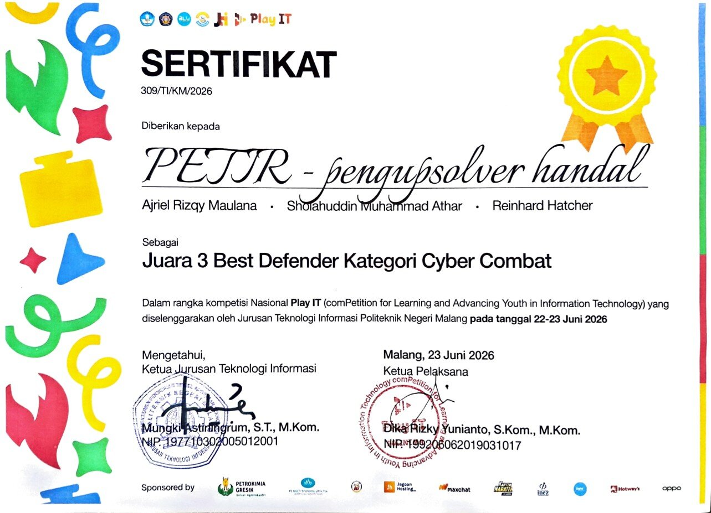
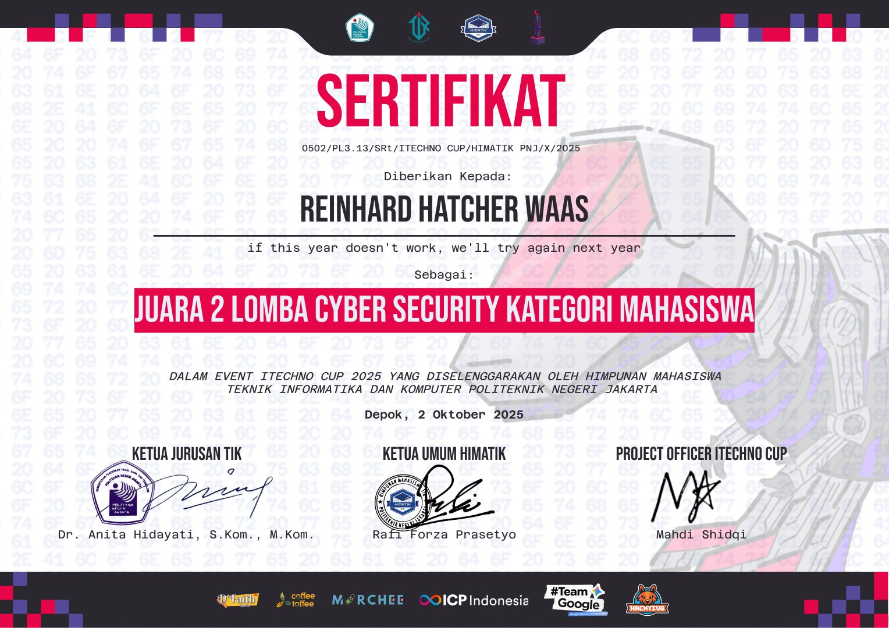

About me
Reinhard Hatcher Waas
Hola! I'm Reinhard, also known as Relster. I'm an undergraduate student at the School of Computer Science, Bina Nusantara University (BINUS), with a strong interest in low-level security and development.
Focus
- Binary exploitation
- Reverse engineering
- Vulnerability research
- Linux kernel exploitation
Skills
Technical
Non-technical
Language
Experience
- Competing in national and international CTFs as a member of team PETIR
- Authored several CTF challenges for national competitions
- Mentored high school students for LKS
Achievements
-
5th Place, HackToday 2026IPB University
-
3rd Place, COMPFEST CTF 2026Universitas Indonesia View certificate (PDF)
-
Best Defender, Wreck-It CTF 7.0Politeknik Siber dan Sandi Negara

-
Best Defender, PlayIt CTF 2026Politeknik Negeri Malang

-
CBC PromotionalCyber Breaker View certificate (PDF)
-
2nd Place, ITechnoCup CTF 2025Politeknik Negeri Jakarta

-
Finalist, IFEST CTF 2025Universitas Atma Jaya Yogyakarta
Currently
Exploring Linux kernel vulnerability research and working on side projects related to the Linux kernel. I'm also learning QEMU exploitation, with V8 exploitation next on the list.